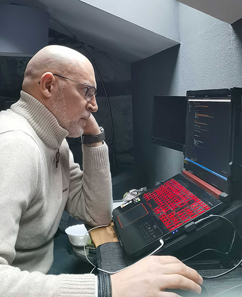
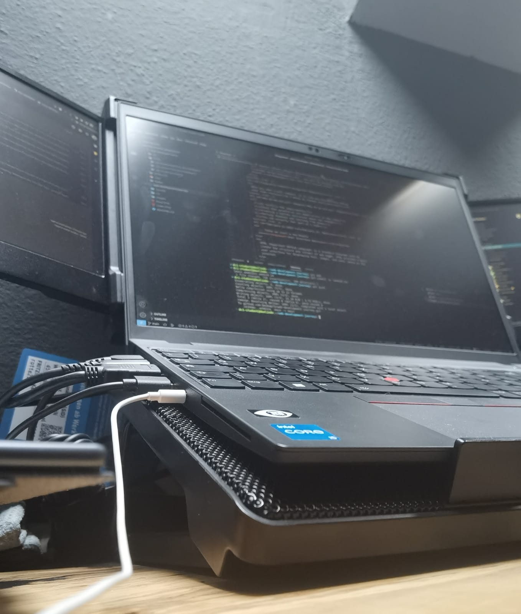

Web development the beginning of a journey.
February 7, 2023
First day! The anticipation of the start of a new adventure, the first steps in a career completely different from anything I had done here, creates an tingling like I haven't felt in many years.
Having the exact notion that this is the opportunity of a lifetime, the anxiety to get started is enormous.
At the age of 49 and a half, which is characterized by essentially never having been a happy and accomplished person on a professional level, the beginning of this adventure that is Web Development gives me the hope of finally doing something that I truly enjoy professionally.
Who would have thought that on August 24, 2020, when I ended my driving shift, I was struggling atrociously with unimaginable and impossible to describe pain, to the point of having entered the emergency room at the hospital in Rotthalmünster with a pain level of 10 out of 10 and being immediately hospitalized for 5 days just for pain control, it would be the only (very painful) part of a long stage of surgeries, pain, suffering, tears and a lot of frustration that would bring me here to this new adventure….
…. Web Development.
First day! The anticipation of the start of a new adventure, the first steps in a career completely different from anything I had done here, creates an tingling like I haven't felt in many years.
Having the exact notion that this is the opportunity of a lifetime, the anxiety to get started is enormous.
At the age of 49 and a half, which is characterized by essentially never having been a happy and accomplished person on a professional level, the beginning of this adventure that is Web Development gives me the hope of finally doing something that I truly enjoy professionally.
Who would have thought that on August 24, 2020, when I ended my driving shift, I was struggling atrociously with unimaginable and impossible to describe pain, to the point of having entered the emergency room at the hospital in Rotthalmünster with a pain level of 10 out of 10 and being immediately hospitalized for 5 days just for pain control, it would be the only (very painful) part of a long stage of surgeries, pain, suffering, tears and a lot of frustration that would bring me here to this new adventure….
…. Web Development.
Web developer the beginning!

February 10, 2023
8:45! -I turned on the computer, opened the Slack app to see if I had any relevant messages. I clicked on the link that takes me to the Zoom meeting.
After some anticipation, the day finally arrived. This long journey of over a year has begun.
New faces, new lives, new dynamics are about to enter my screen and who, throughout this learning that will take place online every day and week, will share this adventure with me.
The first few hours are acquaintance, normal formalities.
After introducing us to the Trainer who will accompany us on this adventure and after the first few minutes, something immediately jumps out, his calm manner (too calm) and somewhat disorganized with regard to the organization of thoughts shows that a lot of caffeine will be needed.
With the day ending, there was some skepticism towards the trainer...
...as the week went on, my fears about the trainer's way of teaching were confirmed. He is definitely a know-it-all, but his peculiar way of teaching very slow and a little disorganized is creating serious concentration problems for me.
It took us two days on a topic that should have been covered in one morning, frustration starts to get the better of me and we're still on the third day of training. I notice that the disgust with this situation is reflected in some other training colleagues. I confess that I am a very patient person with people, but inexplicably it is not like that, I feel frustrated because I expected much more (dynamics) and I fear that if it continues at this pace it will certainly not be an easy year…
...Friday, Soft Skills day. But what a breath of fresh air this day was. Dynamic, cheerful, with a lot of interaction between everyone and very, very interesting and enriching in terms of personal and collective knowledge.
The Coach knew how to captivate us for this session from the first moment. Compared to the previous days, it was like a huge and much-needed decompression. I deeply regret that we are only presented with the presence of this Coach for two sessions.
8:45! -I turned on the computer, opened the Slack app to see if I had any relevant messages. I clicked on the link that takes me to the Zoom meeting.
After some anticipation, the day finally arrived. This long journey of over a year has begun.
New faces, new lives, new dynamics are about to enter my screen and who, throughout this learning that will take place online every day and week, will share this adventure with me.
The first few hours are acquaintance, normal formalities.
After introducing us to the Trainer who will accompany us on this adventure and after the first few minutes, something immediately jumps out, his calm manner (too calm) and somewhat disorganized with regard to the organization of thoughts shows that a lot of caffeine will be needed.
With the day ending, there was some skepticism towards the trainer...
...as the week went on, my fears about the trainer's way of teaching were confirmed. He is definitely a know-it-all, but his peculiar way of teaching very slow and a little disorganized is creating serious concentration problems for me.
It took us two days on a topic that should have been covered in one morning, frustration starts to get the better of me and we're still on the third day of training. I notice that the disgust with this situation is reflected in some other training colleagues. I confess that I am a very patient person with people, but inexplicably it is not like that, I feel frustrated because I expected much more (dynamics) and I fear that if it continues at this pace it will certainly not be an easy year…
...Friday, Soft Skills day. But what a breath of fresh air this day was. Dynamic, cheerful, with a lot of interaction between everyone and very, very interesting and enriching in terms of personal and collective knowledge.
The Coach knew how to captivate us for this session from the first moment. Compared to the previous days, it was like a huge and much-needed decompression. I deeply regret that we are only presented with the presence of this Coach for two sessions.
week of contradictions
February 13, 2023
It was an interesting day. We are working on creating a code of conduct that will guide us throughout this training year.
The way in which the topic was addressed throughout the morning was undoubtedly very interesting and constructive.
During the afternoon we had the pleasure of having a different Basic Digital Literacy trainer who demonstrated, at least for me, what I have been thinking about teaching our resident trainer……
February 14, 2023
…. the day got off to a bad start, really bad to tell you the truth, our resident coach came back and with him the disorganized teaching.
It is not possible to try to teach commands in the “terminal” and not know what to respond to unforeseen situations.
At one point, I lost my temper and was very direct in expressing my frustration with the matter.
I should have had a different attitude, it wasn't good on my part and after the break I asked to speak in front of everyone, apologizing to the coach and other colleagues.
I realized that my learning ambitions do not match the slow and disorganized way we are experiencing in this course, but obviously I will have to adapt to these conditions, so I will remain discreet for the sake of my path in this course and the well-being of other colleagues ...
February 15, 2023
,,, The day started strange and some people in the group started to feel the same frustration that I felt from the beginning.
During the morning break, some people in the group decided to question the trainer about his way of teaching. I chose to turn off the camera and sound, I promised myself I'll keep a low profile, and I will.
After resuming the class, things evolved in a more fluid way, I hope I can finally start talking here about everything that has to do with the Web Development course and nothing about everything else.
We are essentially talking about the terminal installation of Node.js There were some problems with the way it was demonstrated in class, personally I opted for a different and more effective approach, using different commands than those used in class…
with the last command should appear .....
18.14.0
After....
In the afternoon the theme was centered on the “rpm” command
It is
Install an “npm” package. Check if and where this package has been installed. What command was used to check if and where the package was installed?
A way to test commands in the terminal.
At the end we did an evaluation
February 16, 2023
It was an interesting day dedicated to “Git”
What is Git?
Git is a free and open source distributed version control system designed to handle everything from small to very large projects with speed and efficiency.
After that, we start its installation and start using basic commands for your use…
After installing it, start your terminal and type the following command to verify that Git is ready to be used on your computer:
In your terminal, run the following commands to identify yourself with Git:
To create a new repository and start tracking your project with Git, use your terminal
This is a command that is very often used when working with Git. It shows us which files have been changed, which files are tracked, etc.
staging files
From the project folder, we can use the git add command to add our files to the staging area, which allows them to be tracked. We can add a specific file to the staging area with the following command:
o add multiple files, we can do this:
Instead of having to add the files individually, we can also add all the files inside the project folder to the staging area:
By default, this adds all the files and folders inside the project folder to the staging area, from where they are ready to be committed and tracked.
Making commits
A commit is a snapshot of our code at a particular time, which we are saving to the commit history of our repository. After adding all the files that we want to track to the staging area with the git add command, we are ready to make a commit.
To commit the files from the staging area, we use the following command:
Inside the quotes, we should write a commit message which is used to identify it in the commit history.
The commit message should be a descriptive summary of the changes you are committing to the repository.
Branching
Whenever we initialize a folder as a repository, there will be one default branch (typically called master).
We can create a branch that is a copy of (usually) the main branch. Then you can add your changes to this branch without affecting the main branch.
Creating a new branch
You can create a new branch using the following command:
Once we create a branch from master, they start living separate lives so to say. We don't want this to continue for too long, because it will become harder and harder to bring the two together.
For example, after you fully implemented and tested a new feature in your code, you would want to merge those changes to the stable branch of your project (which is usually the default master branch). To merge the changes from a different branch into your current branch, you can use this command:
t was a good day of learning...
February 17, 2023
soft skills day
Once again it was an interesting day where we focused on communication and feelings.
We focus on “Communications Square - Friedemann Schulz von Thun” in “Appreciative communication”
In another topic we talk about the topic: non-violent communication
The big difference goal: learn to differentiate own feelings from interpretation, diagnoses, thoughts
It was an interesting day. We are working on creating a code of conduct that will guide us throughout this training year.
The way in which the topic was addressed throughout the morning was undoubtedly very interesting and constructive.
During the afternoon we had the pleasure of having a different Basic Digital Literacy trainer who demonstrated, at least for me, what I have been thinking about teaching our resident trainer……
February 14, 2023
…. the day got off to a bad start, really bad to tell you the truth, our resident coach came back and with him the disorganized teaching.
It is not possible to try to teach commands in the “terminal” and not know what to respond to unforeseen situations.
At one point, I lost my temper and was very direct in expressing my frustration with the matter.
I should have had a different attitude, it wasn't good on my part and after the break I asked to speak in front of everyone, apologizing to the coach and other colleagues.
I realized that my learning ambitions do not match the slow and disorganized way we are experiencing in this course, but obviously I will have to adapt to these conditions, so I will remain discreet for the sake of my path in this course and the well-being of other colleagues ...
February 15, 2023
,,, The day started strange and some people in the group started to feel the same frustration that I felt from the beginning.
During the morning break, some people in the group decided to question the trainer about his way of teaching. I chose to turn off the camera and sound, I promised myself I'll keep a low profile, and I will.
After resuming the class, things evolved in a more fluid way, I hope I can finally start talking here about everything that has to do with the Web Development course and nothing about everything else.
We are essentially talking about the terminal installation of Node.js There were some problems with the way it was demonstrated in class, personally I opted for a different and more effective approach, using different commands than those used in class…
- source ~/.bashrc
- nvm list-remote
- nvm install v18.14.0 in V18.14.0 you replace with the latest version or the one you want from the list presented in the previous command
- nvm lts/hydrogen installation
- node -v
with the last command should appear .....
18.14.0
After....
- npm install -g npm@9.4.2
- sudo apt install rpm
In the afternoon the theme was centered on the “rpm” command
- npm init
- code .
It is
Install an “npm” package. Check if and where this package has been installed. What command was used to check if and where the package was installed?
A way to test commands in the terminal.
At the end we did an evaluation
February 16, 2023
It was an interesting day dedicated to “Git”
What is Git?
Git is a free and open source distributed version control system designed to handle everything from small to very large projects with speed and efficiency.
After that, we start its installation and start using basic commands for your use…
- sudo apt-get install git
After installing it, start your terminal and type the following command to verify that Git is ready to be used on your computer:
- git –version
In your terminal, run the following commands to identify yourself with Git:
- git config --global user.name "Your Name"
- git config --global user.email "your@email.com"
To create a new repository and start tracking your project with Git, use your terminal
- git init
This is a command that is very often used when working with Git. It shows us which files have been changed, which files are tracked, etc.
- git status
staging files
From the project folder, we can use the git add command to add our files to the staging area, which allows them to be tracked. We can add a specific file to the staging area with the following command:
- git add file.js
o add multiple files, we can do this:
- git add file.js file2.js file3.js
Instead of having to add the files individually, we can also add all the files inside the project folder to the staging area:
- git add .
By default, this adds all the files and folders inside the project folder to the staging area, from where they are ready to be committed and tracked.
Making commits
A commit is a snapshot of our code at a particular time, which we are saving to the commit history of our repository. After adding all the files that we want to track to the staging area with the git add command, we are ready to make a commit.
To commit the files from the staging area, we use the following command:
- git commit -m "Commit message"
Inside the quotes, we should write a commit message which is used to identify it in the commit history.
The commit message should be a descriptive summary of the changes you are committing to the repository.
Branching
Whenever we initialize a folder as a repository, there will be one default branch (typically called master).
We can create a branch that is a copy of (usually) the main branch. Then you can add your changes to this branch without affecting the main branch.
Creating a new branch
You can create a new branch using the following command:
- merging branches
Once we create a branch from master, they start living separate lives so to say. We don't want this to continue for too long, because it will become harder and harder to bring the two together.
For example, after you fully implemented and tested a new feature in your code, you would want to merge those changes to the stable branch of your project (which is usually the default master branch). To merge the changes from a different branch into your current branch, you can use this command:
- git merge "branch-name"
t was a good day of learning...
February 17, 2023
soft skills day
Once again it was an interesting day where we focused on communication and feelings.
We focus on “Communications Square - Friedemann Schulz von Thun” in “Appreciative communication”
In another topic we talk about the topic: non-violent communication
- what we are feeling
The big difference goal: learn to differentiate own feelings from interpretation, diagnoses, thoughts
- Universal Needs
The beginning of learning
February 20, 2023
A new week will start with a different Teacher, but who has already been with us before and with a teaching style that pleases.
We've covered "git" and "GitHub"...
The history of GIT
Was created by Linus Torvalds to track changes to a project from multiple authors
Who likes the idea of travelling through time?
GIT is a way to travel through time for your project!
What is it?
GIT is a command line tool
We use GIT to keep track of changes to files
We can travel through those changes and see how a project appeared earlier in time
How does it work?
GIT does not automatically add your changes, until you tell it to
GIT will keep track of any file changes after you've used git add to track them
Each change or set of changes are recorded within the GIT repository as a commit
You can write a message with each commit
Commit Messages
Optional BUT
Who are you writing these messages for?
NOT for the computer!
- You are writing for your future self
- Co-workers, future developers, anyone else who might be working on the project
What should you write?
- Your message should make sense
- The message should explain in a short summary - what that commit did - what was the purpose
Example of a bad commit message
"Minor changes"
Example of a good commit message
"Fixed bug where video element was being generated as div"
Deleting files
Deleting a file is like any other change, you still have to add the deleted file before committing
! Even if you delete a file, it still exists in your history 11:23
Bash
la / ll -a - shows hidden files
Bash commands can be broken down into smaller parts
git = command commit = subcommand -m = flag git commit -m
GIT
git init - create new git repository
git add - adds a file or files to a repository
git add filename add a single file git add . add EVERYTHING
git status - check current status
git log - shows you the history of a repository
git checkout - allows you to change to a different branch / commit hash
git rebase - very dangerous, but very powerful
Configuring GIT
Remember GitHub and GIT are separate entities
When configuring GIT, this has nothing to do with your GitHub account
There is no such thing as a "GIT account"
When you configure GIT;
git config --global user.name "Your Name" git config --global user.email "your@email.com"
There is no "verification" of that data - you can write anything you like
If you want change any of the configuration settings, you can just run those commands again
Bash
la / ll -a - shows hidden files
Bash commands can be broken down into smaller parts
git = command commit = subcommand -m = flag git commit -m
GIT
git init - create new git repository
git add - adds a file or files to a repository
git add filename add a single file git add . add EVERYTHING
git status - check current status
git log - shows you the history of a repository
git checkout - allows you to change to a different branch / commit hash
git rebase - very dangerous, but very powerful
git remote -v - show the remote repository
git clone - clone a repository from a remote location (you must include the URL)
Use the SSH version of the URL, not the HTTPS version 3:52 GitHub tutorial
- Created a .ssh folder in our home directory (~)#
- ssh-keygen -t ed25519 -C "email@email.com"
- Accept the defaults by pressing enter
- cat id_ed25519.pub
- Paste the public key in GitHub > Settings > SSH and PGP keys 3:54
Local and remote repositories
Local = anything that is available locally on your machine Remote = a repository which lives on a shared network resource
GitHub really shines here - the most post popular and easy to use remote GIT service
git remote -v - view the link to the remote repository
You can link to your remote repositories using either the HTTPS protocol or the SSH protocol
HTTPS
Using HTTPS means that every time you want to interact with your remote repository, you have to enter your username and password
SSH
Secure Shell
Before you can use SSH, you have to generate an SSH key - which will automatically be used when you interact with your remote repository
More work to setup to setup at the start, but saves you time compared to HTTPS
February 21, 2023
…. The day was a continuation of "Github"
git checkout main
git fetch - asks the remote, are there any new branches?
git config --global push.default current
Working in a Team
Example..... 2 people want to work together
- Dieter
- Mary
One of these people must create a repository
Mary creates the repository on GitHub
She shares the URL of the repository with Dieter
-
She uses git clone to make a copy
-
Dieter uses git clone to make a copy
GIT commits
When you create a commit, the contents of that commit should be related to each other
For example, if you make changes to the homepage - when you make your commit for the homepage, it should only include those changes for the homepage
Preparing a commit
- Before you can create a commit, you must add the files to the commit with git add
git add . - adds everything git add index.html - add just index.html
- git commit -m "Here is my message"
Commands
git push - sends new commits to the remote repository. Only sends commits!
Any changes outside of a commit are NOT sent (pushed) to the remote
git pull - pulls changes from the remote repository to the local repository
If you have any uncommitted changes, git pull will abort
git fetch - ask the remote, have any new branches been added?
git checkout {branch} - checks out to a specific branch, for example git checkout main will take you to the main branch
Branches
Within your repository, you can have multiple versions of the code you are working on
Most repositories will have a main or master branch, which represents the up-to-date version of the application.
Why use branches?
If you're working on your own, you don't need to use branches!
- When you're working in a team, if everybody commits to the same branch - it gets messy very quickly, because you are dealing with multiple commits and some of these commits may override each other (merge conflict)
- What if you make a mistake? What if you break the code? Working in a separate branch means your code is isolated from the rest of the team - any faults would be contained.
Working with branches
git branch - lists all local branches
git checkout {branchname} - moves to the branch specified in the command
git checkout -b {branchname} - creates a new branch with the name specified in the command
Creating a new branch creates a COPY of the branch we were previously on
When you're working on a project, you should not be working in the main/master branch - this is BAD PRACTISE!
When working on new features;
- Create a branch from main/master
- The new branch is called your feature branch
Integrating your code back to main / master
using git merge
- Checkout to the branch you want to merge into
- git merge {branchname} - merge from a branch into your currently checked out branch - for example, if you typed git merge homepage - you will be merging from the branch homepage into your current branch
Using Pull Requests
When you make a pull request, it is like you are politely asking your team "can I merge my changes with yours?"
Why do we use pull requests?
- It fulfills the requirements
- Check that you've not added errors in the code
- Creating a healthy discussion about the changes
- Getting feedback and learning from them
- You can actually feel part of a team
February 22, 2023
,,, Today we start a new Module "User Interface Basic"
HTML (Hypertext Markup Language) is a standard language used to create the structure and content of web pages. HTML provides a basic user interface for displaying text, images, and other media on the internet.
In terms of user interface, HTML provides the building blocks for creating interactive elements like buttons, forms, and menus. These elements can be styled using CSS (Cascading Style Sheets) to create a visually appealing and user-friendly interface.
HTML also provides the ability to include hyperlinks, which allow users to navigate between pages and websites. This is an essential aspect of the user interface as it enables users to access the information they are looking for quickly and efficiently.
Overall, HTML provides the foundation for creating a user-friendly and interactive web interface. By using HTML along with CSS and other programming languages, developers can create complex web applications and websites that are easy to use and navigate.
Web Standards
- HTML
- CSS
- JavaScript - can be obfuscated by the machines
Browsers
- Chrome
- Firefox
- Safari
- Brave
Request Response Cycle
- GET request "getting information" from the server
HTML
hyper text markup language
index.htm or index.html
HTML Versions
- HTML 1.1 (1992)
- HTML 5 (2014)
HTML Markup
2 types
-
exists as a pair
My website rules!
-
self closing
Attributes
Composed of 2 parts
Key (src) and Value "logo.jpg"
src="logo.jpg"
Shortcuts for Visual Studio Code
! Loads boilerplate HTML
link Produces a list of different assets you can link link:css
CSS Introduction
Cascading Style Sheets
Styling
What if I don't like;
- The size of the text?
- The space between the characters of text (kerning)?
- The colour of the text?
- The font used?
- The background colour?
We can change all these things with CSS (styles)
CSS Versions
- CSS 1 (1996)
- CSS 3 (1999)
Content is NOT style
How to include the styles on a page
- Inline with the HTML tags - NOT RECOMMENDED
- Embed it with the HTML
- Create a separate file - RECOMMENDED
How to write CSS styles
4 ways to target styling HTML content;
-
The tag or the markup - h2
Will target ALL tags of the same type
-
Classes - .highlight
Precise way to target 1 or more elements with the same styles
Pseudo-classes
IDs
How to construct a style
- All style rules must be contained within curly braces
{ }
We call this the style declaration
- All style declarations must start with a selector
For example; h2
February 23, 2023
It was a day dedicated to reviewing all the information we had the day before with some exercises to assimilate these teachings.
There continue to be some difficulties (more confusion than difficulties) about branches and commits.
February 24, 2023
Day dedicated to Soft Skills with the theme "Intercultural Competences"
But what are Intercultural Competences?
Intercultural competences refer to the ability to understand, communicate, and interact effectively with people from different cultures. It involves the knowledge, attitudes, and skills needed to navigate diverse cultural settings and to build positive relationships with people from different backgrounds.
Some common intercultural competences include:
Cultural awareness: having an understanding of one's own cultural background and being open to learning about other cultures.
Communication skills: being able to communicate effectively with people from different cultures, including the ability to listen actively, ask questions, and provide feedback.
Flexibility and adaptability: being able to adjust one's behavior and communication style to fit different cultural contexts.
Empathy: being able to understand and appreciate the perspectives and experiences of people from different cultures.
Conflict resolution skills: being able to resolve conflicts that may arise in intercultural interactions, including the ability to negotiate, compromise, and find mutually acceptable solutions.
Developing intercultural competences is becoming increasingly important in our globalized world, where people from different cultures are increasingly working and living together.